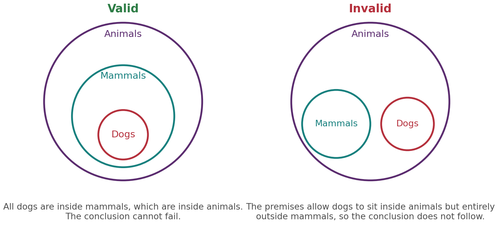
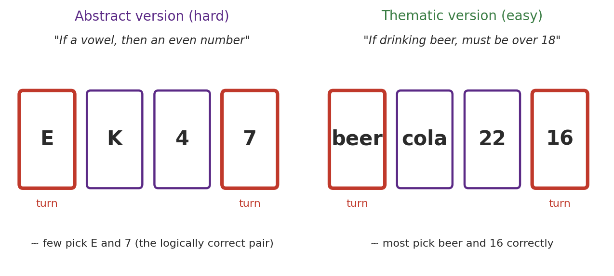
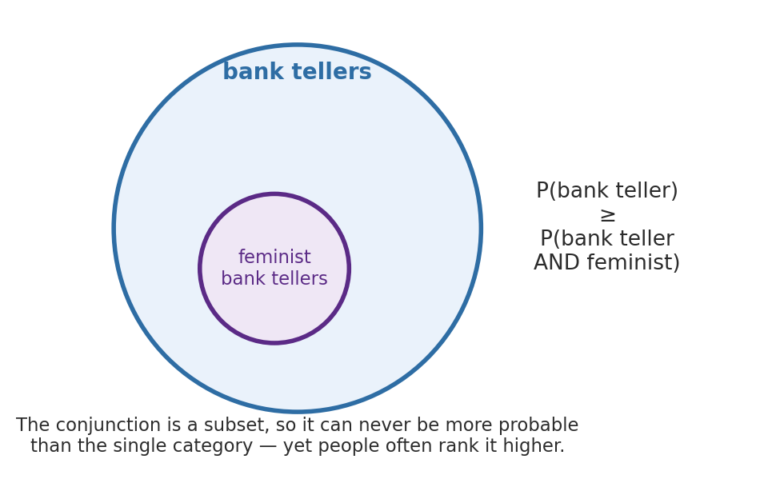
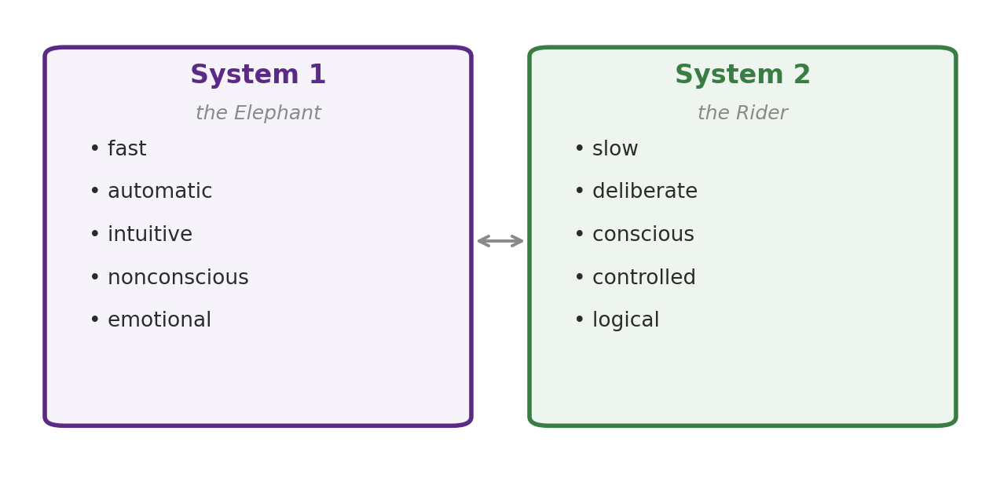
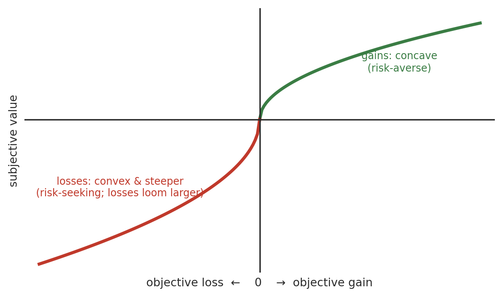
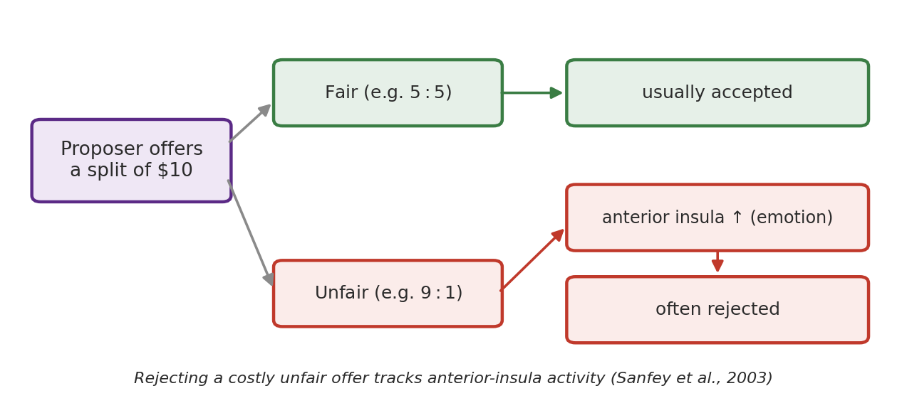

Chapter 11
Judgement, Decisions and Reasoning
Where this chapter sits
The previous chapter was about solving problems: closing the gap between where you are and where you want to be. This chapter is about the two cognitive activities that sit either side of a solution. Reasoning is the process of drawing conclusions from what you already know or observe. Deciding is the process of choosing among alternatives. The two are intertwined, because we usually reason our way towards a decision, but they are not the same.
Two threads from the problem-solving chapter carry straight over. The barriers to insight met there, mental set and functional fixedness, were the mind defaulting to a familiar approach rather than the correct one; the heuristics and biases in this chapter are the same tendency at work in judgement. And the distinction between the sudden unconscious insight and the slow deliberate search of a problem space is the distinction that organises this whole chapter: the split between fast automatic thinking and slow effortful thinking, which Kahneman calls System 1 and System 2, and which this book has been calling the Elephant and the Rider.
A warning that runs through the chapter. Much of the evidence shows people reasoning and deciding badly, in systematic and predictable ways. That is genuinely informative, because the pattern of the errors is a window onto the machinery. But it is easy to over-read, and §11.8 takes up a serious challenge to the whole “humans are irrational” story. Keep some scepticism in reserve as you go, because this chapter is where the habit of asking what exactly was measured gets turned on the literature itself.
Learning objectives
11.1 Reasoning and deciding
Two definitions to fix at the outset. Reasoning is the process of drawing conclusions from premises: you take information you already have and infer something that goes beyond it. Decision-making is the process of choosing among alternatives. In everyday life the two run together, because reaching a decision usually means reasoning about the options first, but you can have one without the other. You can reason to a conclusion you never act on, and you can decide on impulse with no reasoning at all.
Reasoning itself comes in two kinds, and the distinction matters for everything that follows. In deductive reasoning you start from general premises and derive a conclusion guaranteed to follow if the premises are true. In inductive reasoning you start from specific observations and generalise to a conclusion that is probable but never guaranteed. As a rule of thumb, deduction moves from the general to the particular with certainty and induction from the particular to the general with probability, though the defining difference is certainty, not direction. Science and everyday life lean heavily on induction, because we almost never have premises that are certainly true in all cases.
11.2 Inductive reasoning
Inductive reasoning reaches a general conclusion from particular observations. Having seen the sun rise every morning of your life, you conclude that it will rise again tomorrow. The conclusion is not certain, only very probable, and that is the defining feature of induction: the premises support the conclusion without guaranteeing it. A single black swan overturns “all swans are white”, however many white ones you have seen.
Because inductive conclusions are only probable, it is worth asking what makes one inductive argument stronger than another. Three properties of the observations do the work. The representativeness of the observations: are the cases you have seen typical of the whole, or a skewed sample? The number of observations: more cases, other things equal, give firmer footing. And the quality of the evidence: observations that are precise, well controlled and drawn from good sources count for more than casual impressions.
Seeing black crows in one garden is weak evidence that all crows are black; seeing them across many countries, at all times of day, and adding a genetic reason why they must be black, is strong. Induction is indispensable precisely because the certainty of deduction is so rarely available, but its dependence on the sample is also where it goes wrong, as the heuristics later in the chapter will show. Notice that the first of the three factors, representativeness of the sample, is about to reappear as the name of a heuristic. That is not a coincidence: the heuristic is the mind using resemblance where it should be using frequency.
11.3 Deductive reasoning and syllogisms
Deductive reasoning is studied mostly through the syllogism: two premises and a conclusion. The single most important idea here is the distinction between validity and truth, and it is worth stating carefully because it is so easily muddled. A syllogism is valid if the conclusion follows logically from the premises, regardless of whether the premises are actually true. Validity is about form, not content.
Consider: all flowers are animals; all animals can jump; therefore all flowers can jump. Both premises are false and the conclusion is absurd, yet the syllogism is perfectly valid, because if the premises were true the conclusion would have to be true. Truth is a separate question about whether the premises actually hold.
Categorical syllogisms
A categorical syllogism relates two categories using all, no, or some. “All mammals are animals; all dogs are mammals; therefore all dogs are animals” is valid, and you can see why by nesting the categories (Figure 11.1, left). Now compare: all mammals are animals; all dogs are animals; therefore all dogs are mammals. This is invalid, even though the conclusion happens to be true, because the premises place both dogs and mammals inside animals without establishing any relationship between dogs and mammals themselves.

The right-hand panel of Figure 11.1 is the argument. To show a syllogism invalid you do not have to show the conclusion false; you only have to find one arrangement consistent with the premises in which the conclusion fails. Dogs really are mammals, so the conclusion is true. It just does not follow.
Conditional syllogisms
A conditional syllogism has a first premise of the form “if p then q”. Two forms are valid and two are not, and telling them apart is the crux. Modus ponens is valid: if it rains the street gets wet; it is raining; therefore the street is wet. Modus tollens is also valid though harder to see: if it rains the street gets wet; the street is not wet; therefore it is not raining.
The two invalid forms trip most people. Affirming the consequent reasons “the street is wet, therefore it is raining”, which is invalid because the street could be wet for other reasons. Denying the antecedent reasons “it is not raining, therefore the street is not wet”, invalid for the same reason. Only around 40 per cent of people judge these last two correctly.
People do not reason about syllogisms in a vacuum; content leaks in. The atmosphere effect is the tendency to accept a conclusion that merely matches the mood of the premises, so that if both premises say “all”, an “all” conclusion feels right whether or not it follows. More powerful is belief bias: we judge a syllogism valid when its conclusion is believable and invalid when it is not, regardless of the logic. Given “some bananas are fruits; all fruits are pink; therefore some bananas are pink”, many people reject the valid conclusion, because it is unbelievable. Belief bias is the clearest demonstration that we evaluate arguments by their content when we are supposed to be evaluating their form.
The Wason selection task
The most famous demonstration of conditional-reasoning failure is the Wason selection task (Wason, 1966). Four cards each have a letter on one side and a number on the other; you see E, K, 4 and 7. The rule to test is “if there is a vowel on one side, then there is an even number on the other”. Which cards must you turn?
The logically correct answer is E and 7: E to check the rule holds, and 7 because a vowel on its back would break the rule, which is the modus tollens move. Most people pick E and 4. The 4 is useless, since the rule says nothing about what is behind even numbers, and the crucial 7 is neglected. Only around 4 per cent get it right (Figure 11.2, left).

The striking part is what happens when the identical logical problem is dressed in real-world content. Griggs and Cox (1982) used the rule “if a person is drinking beer, they must be over the legal age”, with cards reading beer, cola, and two ages. Now around three-quarters of people correctly turn the beer card and the under-age card (Figure 11.2, right). The logic is unchanged; only the content differs.
Two explanations compete. One is the permission schema: we have a lifetime of practice with rules of the form “to do X you must satisfy Y”, and that learned schema guides the search. The other is evolutionary: humans may have a specialised cheater-detection ability tuned to spotting people who take a benefit without meeting the cost, which the drinking-age rule engages and the letters-and-numbers version does not. The contrast is the reasoning-chapter twin of the analogical paradox from Chapter 10: abstract laboratory versions are hard, meaningful real-world versions are easy. Hold that thought, because §11.8 makes it the basis of a much broader argument.
11.4 Heuristics and biases
When we reason inductively under time pressure or uncertainty, we lean on heuristics: mental shortcuts that usually deliver a good-enough answer quickly. Heuristics are not the problem; they are mostly adaptive. But they produce cognitive biases, systematic and predictable errors, in the cases where the shortcut misfires. Amos Tversky and Daniel Kahneman built a research programme, and Kahneman a Nobel Prize, out of cataloguing these, following Herbert Simon's earlier idea of bounded rationality (Simon, 1955): we are rational within the limits of our information, time and cognitive capacity, and so we tend to settle for options that are good enough rather than optimal. The key move is that a bias is not random noise. Its direction is predictable, and that regularity is what makes it scientifically useful.
The availability heuristic
We judge how likely or frequent something is by how easily examples come to mind (Tversky & Kahneman, 1973). Usually this works, because common things are easier to recall. But ease of recall tracks other things too, especially vividness and media coverage. People judge dramatic causes of death as more frequent than mundane ones, homicide over diabetes or stomach cancer and tornado over asthma, because the dramatic ones are more memorable rather than more common (Lichtenstein et al., 1978). People fear dying in a plane crash more than in a car crash, though the car is far more dangerous. The same mechanism feeds illusory correlations and, through them, prejudice: a few memorable instances make a spurious link between a group and a trait feel real.
Representativeness and base-rate neglect
We judge how probable it is that something belongs to a category by how much it resembles our stereotype of that category (Tversky & Kahneman, 1974). Told that Steve is very shy and withdrawn, meek and tidy, with a need for order and detail, most people say he is more likely a librarian than a farmer, because he matches the librarian stereotype. But this ignores the base rate: there are vastly more farmers than librarians, so a random quiet man is still probably a farmer. Resemblance swamps the background frequencies that ought to dominate. Base-rate neglect is the representativeness heuristic's most consequential failure, and it recurs everywhere from medical diagnosis to hiring.
Representativeness also produces the conjunction fallacy (Tversky & Kahneman, 1983). The conjunction rule of probability is airtight: the probability of two things being true together can never exceed the probability of either one alone. Yet told about a woman deeply engaged with social justice, people rate “she is a bank teller and a feminist” as more probable than “she is a bank teller”, because the fuller description resembles the person described. Adding detail can raise resemblance, but it can never raise probability, and that is the whole error in one line (Figure 11.3).

Anchoring, myside and confirmation bias
Several further biases round out the picture. Anchoring: an initial value, even an arbitrary one, drags subsequent estimates towards it, and we adjust away from it insufficiently. Ask whether executive fraud occurs in more than 10 firms per thousand and people estimate low; ask relative to 200 per thousand and the same people estimate far higher.
Myside bias is the tendency to generate and evaluate evidence in a way slanted towards our own prior opinions; confirmation bias is the closely related tendency to seek information that fits our hypothesis and overlook what contradicts it. Andrew Wakefield's 1998 paper linking the MMR vaccine to autism, later found to be fraudulent and retracted in 2010, shows where these biases do their damage. The paper itself was a matter of misconduct rather than bias, but the scare it started persists despite overwhelming contrary evidence, because people who already distrust vaccines seek out and credit reports that fit that view and discount the large studies that do not. A related error, overconfidence, means our stated confidence routinely outruns our accuracy: asked for ranges we are 98 per cent sure contain the truth, most of us capture it far less often.
11.5 Models of decision-making
How should decisions be made, and how are they actually made? The classical answer from economics is expected utility theory. It assumes a rational chooser who, given all relevant information, selects the option with the maximum expected utility. Utility is whatever the person values, which need not be money, since people value time, family, health and fun, so choosing the smaller cash payoff is not automatically irrational. The theory is normative: it says what an ideal reasoner ought to do, and it is genuinely useful for thinking about gambles and trade-offs.
The trouble is that people systematically depart from it, and not only because they value non-monetary things. Denes-Raj and Epstein (1994) offered people a prize for drawing a red jelly bean from one of two bowls: a small bowl with 1 red among 10, a 10 per cent chance, or a large bowl with 7 red among 100, a 7 per cent chance. Many chose the worse bowl, and when the large bowl held 9 red beans, a majority did.
What makes the result telling rather than merely odd is what participants said afterwards. They knew the probabilities were against them, and reported that they nonetheless felt they had a better chance when more winning beans were in view. This is the ratio bias, or denominator neglect, and it is not a failure of understanding: the arithmetic was understood and overridden anyway. That is strong evidence that two different processes are competing for the decision, which is harder to explain away than an error someone simply did not notice.
That competition is the dual-system account, made famous by Kahneman (2011). System 1 is fast, automatic, intuitive, effortless, largely nonconscious and emotional. System 2 is slow, deliberate, conscious, effortful and logical (Figure 11.4). Most of daily life runs on System 1, sensibly, because deliberating over every choice would be paralysing; System 2 takes over for the decisions that warrant the effort, or at least should. Almost every heuristic and bias in this chapter is System 1 producing a quick answer that System 2 fails to catch and correct.

11.6 Emotion in decision-making
Expected utility theory has no place for feelings, yet emotion pervades real choice. It helps to separate two kinds. Expected emotions are the feelings we predict an outcome will produce; incidental emotions are feelings we happen to be in that have nothing to do with the decision, such as mood, the weather or a bad night's sleep, but that colour it anyway.
Both distort choice, and expected emotions do so in a more surprising way than it might seem. Kermer, Driver-Linn, Wilson and Gilbert (2006) had some participants forecast how they would feel after winning or losing a gamble, and others actually play it. Forecasters were loss averse: they predicted that losing would hurt more than an equivalent win would please. They were wrong. Loss forecasters significantly overestimated how unhappy they would be, and, crucially, those who actually lost were no less happy than those who actually won.
That is stronger than the usual textbook statement, so it is worth pausing on. The asymmetry between losses and gains showed up in the predictions and not in the experience. A second study made the test harder by using a favourable gamble, a 50 per cent chance of winning $5 against a 50 per cent chance of losing $3, and participants still predicted the smaller loss would outweigh the larger gain, and still showed no such asymmetry when it happened. Gain forecasters overestimated their happiness too, though more marginally, so the error is not confined to losses; it is simply larger for them.
The mechanism the authors identify explains why the error persists. People failed to anticipate how readily they would rationalise a loss: having been given $5 and lost $3, participants could easily reframe it as “I still made $2”, and did not anticipate that they would. We overestimate how much we will dwell on a bad outcome and underestimate how quickly we will make peace with it. The paper's title states the conclusion plainly: loss aversion is an affective forecasting error. That matters for what follows, because it suggests that loss aversion, the asymmetry prospect theory builds into its value function, operates on anticipated losses rather than felt ones.
The framing effect
The best-known demonstration that gains and losses are treated differently is the framing effect (Tversky & Kahneman, 1981): the same choice, described differently, produces different decisions. In the classic version, a disease is expected to kill 600 people. Told that Program A saves 200 versus Program B's gamble, most people choose the sure saving; told the objectively identical Program C lets 400 die versus the same gamble, most people now take the gamble. The pattern is systematic: framed as gains, people are risk-averse and lock in the sure thing; framed as losses, they become risk-seeking to avoid the certain loss (Figure 11.5). That reversal comes from the curvature of the value function rather than from loss aversion; loss aversion, the separate finding that losses loom larger than equivalent gains, shows up most clearly when people refuse a 50-50 gamble to win or lose the same amount. A related form, attribute framing, works on single descriptions: a product labelled 90 per cent fat-free sounds healthier than one labelled 10 per cent fat, though the two describe the same thing.

Because framing and the surrounding defaults shape choice, the way options are presented, the choice architecture, has real consequences. Organ-donation rates differ enormously between countries with an opt-in system, where you must actively register, and an opt-out system, where you are a donor unless you decline, not because people care differently but because of status-quo bias, the tendency to stick with the default and do nothing. Setting the default is therefore a policy lever, and the same logic runs through pension enrolment, medical consent and countless commercial choices. Presenting options is never neutral.
Feelings as information
Everything so far treats emotion as something that happens to a decision, distorting an otherwise clean calculation. That is one side of the story and it is incomplete, because it cannot explain why we have feelings about outcomes at all.
The other side begins from a biological observation. Every living thing, from a single cell upwards, must keep its internal state within the narrow range that sustains life, a requirement called homeostasis. On this account emotions are the bodily responses that serve that regulation, changes in heart rate, gut and posture, while feelings are the conscious perception of how that regulation is going. A feeling is a report on the state of the organism (Damasio, 2018).
If that is what feelings are, they are not noise. They are data. Because feelings track whether things are going well or badly for the body, they attach a value to experiences and to anticipated outcomes, a rough tag of good-for-me or bad-for-me, and that tag lets us evaluate options quickly without computing each one through. This is why damage to the brain regions that integrate bodily signals with decision-making tends to produce not coolly rational choosers but people who decide badly.
Bechara, Damasio, Damasio and Anderson (1994) showed this with a card task now known as the Iowa Gambling Task. Two of four decks give large immediate rewards but larger occasional penalties, and so lose money over time; the other two give smaller rewards and come out ahead. Controls learned to favour the profitable decks. Patients with damage to the ventromedial prefrontal cortex did not, despite otherwise preserved intellect, and the authors' summary of why is the useful part: they were oblivious to the future consequences of their actions and seemed to be guided by immediate prospects only. The same pattern runs through their lives, where they decide against their own interests repeatedly and without learning from it. Removing the feelings does not reveal a hidden logician underneath; it removes the value signal that made the future weigh on the present.
Hold both readings together, because the chapter needs both. Feelings can mislead, as affective forecasting and framing show. They also carry information that makes fast, mostly adequate choice possible at all. Those are not competing claims; they are the same mechanism described from its failures and from its function. §11.7 shows the mechanism in tissue, and §11.8 turns the same point on the whole heuristics-and-biases programme.
11.7 The neuroscience of deciding
If emotion is doing real work in decisions, it should be visible in the brain, and this is the province of neuroeconomics. The signature study is Sanfey and colleagues' (2003) use of the ultimatum game. One player proposes how to split a sum of money; the second either accepts, in which case both are paid as proposed, or rejects, in which case neither gets anything. A purely rational responder should accept any non-zero offer, since something beats nothing. In fact people routinely reject unfair offers, paying to punish the proposer.
Scanning responders with fMRI, Sanfey found that unfair offers activated the anterior insula, a region tied to negative emotional states such as disgust, alongside the dorsolateral prefrontal cortex, tied to cognitive control, and the anterior cingulate, tied to conflict detection. The telling result is that the stronger the anterior-insula response to an unfair offer, the more likely the person was to reject it: insula activity biased towards rejection, prefrontal activity towards accepting the money (Figure 11.6).

The decision looks like a contest between an emotional response to unfairness and a cognitive pull towards the payoff, which is System 1 and System 2 made visible in tissue. Two things are worth drawing out. The insula is also central to interoception, the sensing of the body's internal state, which is exactly the mechanism §11.6 described: the signal biasing the choice is a bodily one. And rejecting an unfair offer is only irrational if the payoff is the whole story. In a world of repeated interactions, a reputation for refusing to be exploited is worth something, which is the first hint that behaviour looking irrational in a laboratory may be well adapted outside it.
11.8 Are we really that irrational?
This chapter has catalogued a long list of ways people reason and decide badly. It would be easy to leave with the conclusion that human judgement is fundamentally broken and in need of expert correction. That conclusion is too strong, and the case against it is the right note on which to end the chapter.
Ecological rationality
Gerd Gigerenzer's challenge to the heuristics-and-biases programme runs as follows. Heuristics are not bugs to be corrected; they are fast and frugal tools tuned to the environments in which they evolved and are used (Gigerenzer et al., 1999). Judged against a formal standard in the abstract, they look like failures. Judged by whether they produce good decisions quickly in the world, with limited information and limited time, they often do very well, and simple rules can match or beat complex statistical models on real problems.
There is also a specific and telling result. Many classic biases shrink or disappear when the same problem is posed in natural frequencies rather than probabilities (Gigerenzer & Hoffrage, 1995). Base-rate neglect in medical diagnosis is the best example: presented as “10 out of every 1,000 women” rather than “a probability of 0.01”, performance improves markedly, and later work showed the same gain in practising doctors (Hoffrage & Gigerenzer, 1998). That matters because it relocates the fault. If the error depends on the format of the question, then it is partly a property of the format and not only of the mind, and the mind may be well suited to the format it actually evolved with, which is frequencies of observed events rather than decimal probabilities.
You have met the shape of this argument twice already, once in the previous chapter and once in this one. It is the analogical paradox from §10.7, where transfer is fragile in the laboratory and fluent in the real world, and it is the Wason selection task from §11.3, where an abstract rule defeats almost everyone and a drinking-age rule with identical logic is easy. In all three cases performance depends on the fit between the problem's presentation and the machinery brought to it. Rationality on this view is not a fixed quantity a person has more or less of; it is a relation between a mind and an environment.
Which biases hold up?
There is a second, methodological challenge, and it is one this unit has been preparing you for since Chapter 5. Most classic findings come from undergraduates answering artificial word problems, and several have proved hard to replicate at their original effect sizes. It is worth knowing which parts of this chapter rest on firm ground, and Table 11.1 sorts them.
| Robust and well replicated | Mixed, or smaller than first claimed |
|---|---|
| Framing effects (gain versus loss) | Loss aversion: contested. Its size depends heavily on how it is measured, and Kermer et al. (2006) found it in forecasts rather than experience (see text) |
| Base-rate neglect and the conjunction fallacy | Ego depletion, or willpower as a depletable resource: failed to replicate in a multi-laboratory pre-registered test (Hagger et al., 2016) |
| Belief bias in syllogistic reasoning | Many social-priming effects, such as cleanliness cues altering moral judgement |
| Confirmation and myside bias | |
| Anchoring, in its classic form (Klein et al., 2014), though incidental anchors are weaker |
Table 11.1 The replication picture for the effects in this chapter and the surrounding literature. Most are real; several are smaller and more context-dependent than the textbook headlines suggest.
The ego-depletion entry deserves a closer look, because it shows what a serious negative result looks like. Hagger and colleagues (2016) had 23 laboratories run the same pre-registered protocol, based on one by Sripada and colleagues (2014), on a combined sample of 2,141 participants. They found an effect of d = 0.04, with a 95 per cent confidence interval running from −0.07 to 0.15. Note what that is and is not. It is not a failure to find an effect for want of power, which would produce a wide interval spanning large values in both directions. It is a tight interval centred on almost nothing, which is the much stronger claim that if any effect exists it is too small to matter, and it stands against an earlier literature reporting a medium-sized one. An underpowered null and a well-powered near-zero look alike if you read only the p value, and they are entirely different pieces of evidence.
Loss aversion is the entry most likely to surprise you, since it is often presented as the bedrock of behavioural economics. Gal and Rucker (2018) argue that many apparent demonstrations of it have other explanations, such as status-quo bias or inertia, and that losses do not reliably loom larger than gains. Defenders reply that the effect is real but has moderators, appearing at larger stakes and shrinking or vanishing at small ones (Mrkva et al., 2020). You have already met a third position in §11.6: Kermer and colleagues found the asymmetry in people's forecasts but not in their experience. The defensible summary is that people often choose as if losses loom larger, while the size, generality and source of that asymmetry are still being argued over.
Read Table 11.1 carefully, because the honest summary is neither “it was all overblown” nor “nothing has changed”. The core phenomena of this chapter are robust. What has been revised downward are magnitudes, the generality of some effects, and in a few cases, notably ego depletion and several social-priming results, the existence of the effect at all. Notice which kind of finding survived: the ones with a clear mechanism and a large, replicable behavioural signature, such as framing and belief bias. The ones that shrank tend to be those where the effect was inferred from a small difference in a single measure.
So what should you take from the chapter? Three things. The biases are real and worth knowing, because their direction is predictable and that is what makes them correctable. They are smaller and more situation-dependent than the popular literature suggests, so a confident claim that some nudge will reliably change behaviour deserves the scepticism you would apply to any other effect. And the underlying machinery is not defective. It is a system built to decide quickly and adequately with incomplete information, which is the problem it actually faces, and which it mostly solves.
Chapter summary
Reasoning is drawing conclusions; decision-making is choosing among alternatives. Deductive reasoning moves from general premises to a guaranteed conclusion; inductive reasoning moves from specific observations to a probable one, its strength set by the representativeness, number and quality of the observations.
In deduction, validity (does the conclusion follow?) is separate from truth (are the premises actually true?). To show a syllogism invalid it is enough to find one arrangement consistent with the premises in which the conclusion fails.
Categorical syllogisms relate categories with all, no and some. Conditional syllogisms are valid as modus ponens and modus tollens but not as affirming the consequent or denying the antecedent. Belief bias makes us judge validity by believability, which is the clearest evidence that we assess form by content.
The Wason selection task shows people fail abstract conditional reasoning but succeed with thematic content, explained by permission schemas or cheater detection.
Heuristics are useful shortcuts that produce systematic biases: availability (ease of recall), representativeness and base-rate neglect, the conjunction fallacy, anchoring, confirmation and myside bias, and overconfidence. A bias is not noise; its direction is predictable.
Expected utility theory describes an ideal rational chooser. People depart from it, as the jelly-bean ratio bias shows, and crucially they do so while understanding the arithmetic, which is why the dual-system account (System 1 fast and intuitive, System 2 slow and deliberate) is needed: biases are uncorrected System 1 outputs.
Emotion is built into choice. Kermer and colleagues (2006) found the loss-gain asymmetry in people's forecasts but not in their experience, because they failed to anticipate how readily they would rationalise a loss, so loss aversion is at least partly an affective forecasting error. We are also swayed by framing (risk-averse for gains, risk-seeking for losses), and defaults shape decisions through status-quo bias.
Feelings are not only distorting. On a homeostatic account, emotions are bodily responses serving internal regulation and feelings are the perception of how that regulation is going, so feelings tag options with value and make fast evaluation possible. Patients with ventromedial prefrontal damage retain intellect but are insensitive to future consequences and guided by immediate prospects (Bechara et al., 1994), so damage to these systems impairs decision-making rather than purifying it.
Neuroeconomics makes the contest visible: in Sanfey and colleagues' ultimatum game, anterior-insula activity to unfair offers predicts rejection while prefrontal activity favours accepting the payoff. The insula is also central to interoception, so the signal biasing the choice is a bodily one.
Gigerenzer's ecological rationality holds that heuristics are fast and frugal tools suited to real environments, and many biases shrink when problems are posed in natural frequencies rather than probabilities, which relocates part of the fault to the format of the question.
The replication picture is mixed but not devastating: framing, base-rate neglect, the conjunction fallacy, belief bias, confirmation bias and classic anchoring are robust; loss aversion is contested; ego depletion and many social-priming effects have not held up. Most effects are real, smaller and more context-dependent than the headlines suggest.
Rationality is therefore not all-or-nothing. It depends on the fit between the mind and the environment it is operating in, which is the same lesson the analogical paradox and the Wason task taught in different words.
Self-check questions
Distinguish inductive from deductive reasoning, and name the three factors that determine the strength of an inductive argument.
Explain the difference between validity and truth, using the “all flowers are animals” syllogism. Why is belief bias evidence that we judge form by content?
Using Figure 11.1, explain why “all mammals are animals; all dogs are animals; therefore all dogs are mammals” is invalid even though its conclusion is true. What is the general method for showing a syllogism invalid?
For conditional syllogisms, which two forms are valid and which two are not? Give the invalid form that reasons “the street is wet, therefore it is raining”, and name it.
Why do people fail the abstract Wason selection task but succeed with the drinking-age version? Give both explanations, and say what the contrast has in common with the analogical paradox of §10.7.
Distinguish the availability and representativeness heuristics, and give an example of base-rate neglect.
Why can the conjunction fallacy never be a correct probability judgement? Explain in terms of what adding detail does to resemblance and to probability.
What does expected utility theory predict, and how do the Denes-Raj and Epstein jelly-bean results depart from it? Why does the fact that participants understood the probabilities make the result stronger evidence rather than weaker?
Explain the framing effect in terms of risk attitudes for gains versus losses, and give a real-world example of choice architecture exploiting status-quo bias.
Set out the homeostatic account of the difference between emotions and feelings, and explain how feelings could improve rather than degrade a decision.
Bechara and colleagues (1994) found their patients were guided by immediate prospects only. Explain why that impairs decision-making rather than making them more rational, and what it suggests about the relationship between emotion and reason.
Kermer and colleagues found the loss-gain asymmetry in forecasts but not in experience. Explain what that implies about loss aversion, and what mechanism the authors identified.
Describe Sanfey and colleagues' ultimatum-game findings. What does anterior-insula activity predict, and in what sense does rejecting an unfair offer stop looking irrational once repeated interactions are considered?
State Gigerenzer's ecological-rationality argument. Why does the natural-frequencies result relocate part of the fault away from the reasoner?
Using Table 11.1, name two effects from this chapter that are well replicated and two claims from the wider literature that are not. What distinguishes the two groups?
“People are fundamentally irrational.” Evaluate this claim using the material in §11.8, and say what a more defensible summary would be.
Model answers to these questions are in the answers companion, Chapter 11. Try each question yourself before you look.
Attribution and licence
This chapter is licensed under a Creative Commons Attribution-NonCommercial-ShareAlike 4.0 International (CC BY-NC-SA 4.0) licence. It adapts and remixes material from the sources below; changes were made, including restructuring, rewriting for voice and level, integration of the neuroeconomic material, and the addition of original framing, prompts and figures.
Andrade and Walker (2019), Cognitive Psychology (LibreTexts / College of the Canyons), Chapter 8 (Reasoning) and Chapter 9 (Decision Making). CC BY 4.0. Base source: syllogisms, validity and truth, the Wason task, inductive-argument strength, the availability and representativeness heuristics, the conjunction fallacy, confirmation bias, the utility approach and framing.
Graham and Griffin (2025), Cognitive Psychology, Chapter 9: Judgement, Decision Making, and Intelligence (Central New Mexico Community College). CC BY-NC-SA 4.0. Supplement: bounded rationality, anchoring, overconfidence, the framing problem, and the dual-system account. Intelligence material omitted per the unit's scope.
All other studies cited in this chapter are described from standard knowledge in the author's own wording, with no source text adapted. The homeostatic account of emotions and feelings in §11.6 follows Damasio (2018).
Figures 11.1 to 11.6 are original diagrams created for this book.
Full bibliographic details for every work cited in this chapter, including the sources named above, are given in the References below.
References
Andrade, M., & Walker, N. (2019). Cognitive psychology. College of the Canyons; LibreTexts. https://socialsci.libretexts.org/Bookshelves/Psychology/Cognitive_Psychology/Cognitive_Psychology_(Andrade_and_Walker)
Bechara, A., Damasio, A. R., Damasio, H., & Anderson, S. W. (1994). Insensitivity to future consequences following damage to human prefrontal cortex. Cognition, 50(1–3), 7–15. https://doi.org/10.1016/0010-0277(94)90018-3
Damasio, A. (2018). The strange order of things: Life, feeling, and the making of cultures. Pantheon Books.
Denes-Raj, V., & Epstein, S. (1994). Conflict between intuitive and rational processing: When people behave against their better judgment. Journal of Personality and Social Psychology, 66(5), 819–829. https://doi.org/10.1037/0022-3514.66.5.819
Gal, D., & Rucker, D. D. (2018). The loss of loss aversion: Will it loom larger than its gain? Journal of Consumer Psychology, 28(3), 497–516. https://doi.org/10.1002/jcpy.1047
Gigerenzer, G., & Hoffrage, U. (1995). How to improve Bayesian reasoning without instruction: Frequency formats. Psychological Review, 102(4), 684–704. https://doi.org/10.1037/0033-295X.102.4.684
Gigerenzer, G., Todd, P. M., & the ABC Research Group. (1999). Simple heuristics that make us smart. Oxford University Press.
Graham, R., & Griffin, S. (2025). Cognitive psychology. Central New Mexico Community College. https://nmoer.pressbooks.pub/cognitivepsychology/
Griggs, R. A., & Cox, J. R. (1982). The elusive thematic-materials effect in Wason's selection task. British Journal of Psychology, 73(3), 407–420. https://doi.org/10.1111/j.2044-8295.1982.tb01823.x
Hagger, M. S., Chatzisarantis, N. L. D., Alberts, H., Anggono, C. O., Batailler, C., Birt, A. R., Brand, R., Brandt, M. J., Brewer, G., Bruyneel, S., Calvillo, D. P., Campbell, W. K., Cannon, P. R., Carlucci, M., Carruth, N. P., Cheung, T., Crowell, A., De Ridder, D. T. D., Dewitte, S., … Zwienenberg, M. (2016). A multilab preregistered replication of the ego-depletion effect. Perspectives on Psychological Science, 11(4), 546–573. https://doi.org/10.1177/1745691616652873
Hoffrage, U., & Gigerenzer, G. (1998). Using natural frequencies to improve diagnostic inferences. Academic Medicine, 73(5), 538–540. https://doi.org/10.1097/00001888-199805000-00024
Kahneman, D. (2011). Thinking, fast and slow. Farrar, Straus and Giroux.
Kermer, D. A., Driver-Linn, E., Wilson, T. D., & Gilbert, D. T. (2006). Loss aversion is an affective forecasting error. Psychological Science, 17(8), 649–653. https://doi.org/10.1111/j.1467-9280.2006.01760.x
Klein, R. A., Ratliff, K. A., Vianello, M., Adams, R. B., Jr., Bahník, Š., Bernstein, M. J., Bocian, K., Brandt, M. J., Brooks, B., Brumbaugh, C. C., Cemalcilar, Z., Chandler, J., Cheong, W., Davis, W. E., Devos, T., Eisner, M., Frankowska, N., Furrow, D., Galliani, E. M., … Nosek, B. A. (2014). Investigating variation in replicability: A “many labs” replication project. Social Psychology, 45(3), 142–152. https://doi.org/10.1027/1864-9335/a000178
Lichtenstein, S., Slovic, P., Fischhoff, B., Layman, M., & Combs, B. (1978). Judged frequency of lethal events. Journal of Experimental Psychology: Human Learning and Memory, 4(6), 551–578. https://doi.org/10.1037/0278-7393.4.6.551
Mrkva, K., Johnson, E. J., Gächter, S., & Herrmann, A. (2020). Moderating loss aversion: Loss aversion has moderators, but reports of its death are greatly exaggerated. Journal of Consumer Psychology, 30(3), 407–428. https://doi.org/10.1002/jcpy.1156
Sanfey, A. G., Rilling, J. K., Aronson, J. A., Nystrom, L. E., & Cohen, J. D. (2003). The neural basis of economic decision-making in the ultimatum game. Science, 300(5626), 1755–1758. https://doi.org/10.1126/science.1082976
Simon, H. A. (1955). A behavioral model of rational choice. The Quarterly Journal of Economics, 69(1), 99–118. https://doi.org/10.2307/1884852
Sripada, C., Kessler, D., & Jonides, J. (2014). Methylphenidate blocks effort-induced depletion of regulatory control in healthy volunteers. Psychological Science, 25(6), 1227–1234. https://doi.org/10.1177/0956797614526415
Tversky, A., & Kahneman, D. (1973). Availability: A heuristic for judging frequency and probability. Cognitive Psychology, 5(2), 207–232. https://doi.org/10.1016/0010-0285(73)90033-9
Tversky, A., & Kahneman, D. (1974). Judgment under uncertainty: Heuristics and biases. Science, 185(4157), 1124–1131. https://doi.org/10.1126/science.185.4157.1124
Tversky, A., & Kahneman, D. (1981). The framing of decisions and the psychology of choice. Science, 211(4481), 453–458. https://doi.org/10.1126/science.7455683
Tversky, A., & Kahneman, D. (1983). Extensional versus intuitive reasoning: The conjunction fallacy in probability judgment. Psychological Review, 90(4), 293–315. https://doi.org/10.1037/0033-295X.90.4.293
Wason, P. C. (1966). Reasoning. In B. M. Foss (Ed.), New horizons in psychology (pp. 135–151). Penguin.